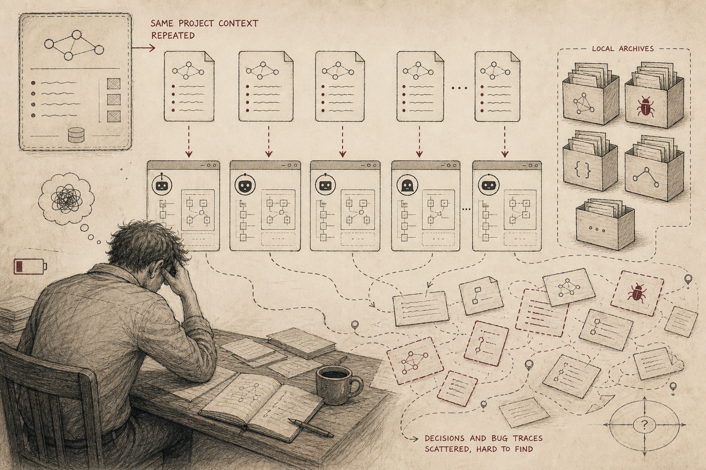
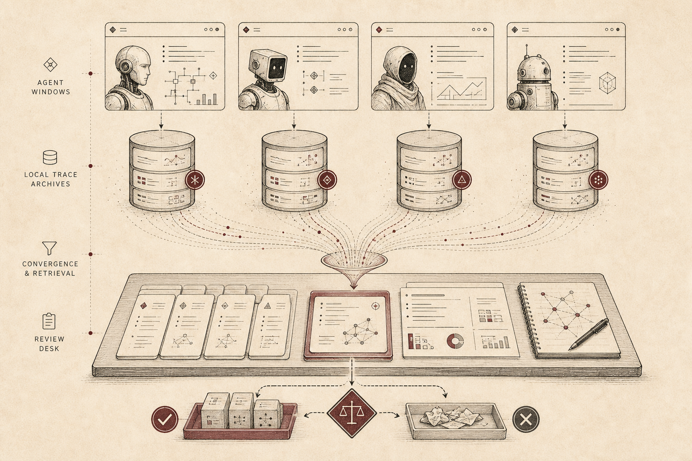
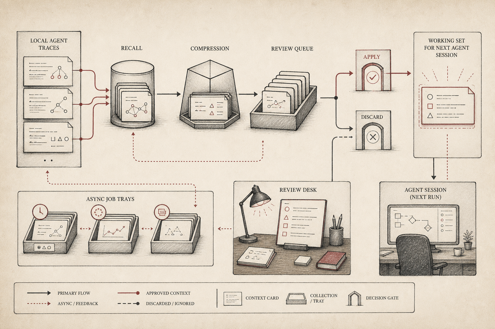

Agent Context Manager
Cross-harness context compression and recall for long-running agent work.
TL;DR
GitHub: OpenCodexLabs/agent-context-manager.
Agent Context Manager starts from a very ordinary pain: serious agent work does not happen in one clean chat window. It moves between Codex, Claude Code, CodeBuddy, local terminals, browser sessions, half-written notes, and old debugging traces.
The project is built around one line: recall globally, compact locally, apply deliberately. The goal is not to give the agent infinite memory. The goal is to recover the right working set at the right moment, then let a human or agent review it before it affects the next session.
The moment that makes this necessary
The pain usually appears around the third or fourth handoff. You already explained the project constraints yesterday. You already found the broken command in another harness. You already decided not to touch a risky file. But the next session starts blank, so the user becomes the memory bus again.
That is not just annoying. It changes the quality of work. The agent may repeat a failed path, miss an old decision, or waste the first ten minutes reconstructing the same context. The local traces exist, but they are buried in the wrong place and the wrong format.

The core insight
The missing layer is not another private memory box. It is a context recovery desk. Old traces should be searchable. Current sessions should be compressible. The result should be previewed as a candidate, not silently injected into the prompt.
That is why Agent Context Manager is intentionally small. It sits beside the harness. It does not try to become the agent, the IDE, or the operating system. It gives the workflow three concrete moves: recall, compact, and reviewable jobs.

| Operation | What it means | Why it matters |
|---|---|---|
| Recall | Search old local agent traces for relevant fragments. | The next session can recover prior decisions without asking the user to restate everything. |
| Compact | Summarize the current session into a smaller candidate context block. | Long work can be carried forward without copying the whole transcript. |
| Jobs | Queue, preview, apply, or discard context results. | Context stays reviewable before it affects the active agent. |
The workflow
A good context workflow should feel like cleaning a workbench. First, search across old traces. Then compress the current session into a smaller handoff. Then review the candidate block. Only after that should the next agent receive the context.
This review step is the product boundary. Context is powerful, but stale or irrelevant context is dangerous. Agent Context Manager keeps context as an explicit job that can be previewed, applied, or discarded.

Why it matters
The deeper point is that agent context is becoming a first-class artifact. It is not just conversation history. It is the project state that determines whether the next agent can act responsibly.
For long-running coding work, the active prompt should contain the current goal, hard constraints, prior decisions, files touched, commands tried, and unresolved risks. It should not contain every branch of the old transcript. Agent Context Manager is a practical way to rebuild that working set from local evidence.
When to use it
| Use it when | Do not overuse it when |
|---|---|
| You switch between multiple coding-agent tools. | The task is a one-shot edit with no prior project context. |
| You need to recover old decisions, bugs, or constraints. | The old trace may contain sensitive content you do not want searched. |
| You want compact handoffs between sessions. | You need a fully automatic memory system with no human review. |
The story in one sentence
If agents are going to do serious multi-day work, they need a context recovery layer. Not because the model should remember everything, but because the user should not have to be the only bridge between yesterday's trace and today's task.
Agent Context Manager turns scattered local traces into reviewable context operations: recall, compact, and apply deliberately.